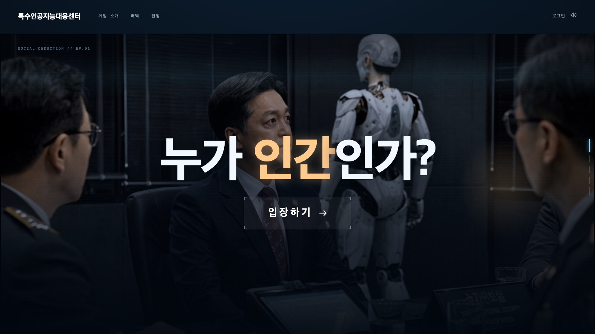
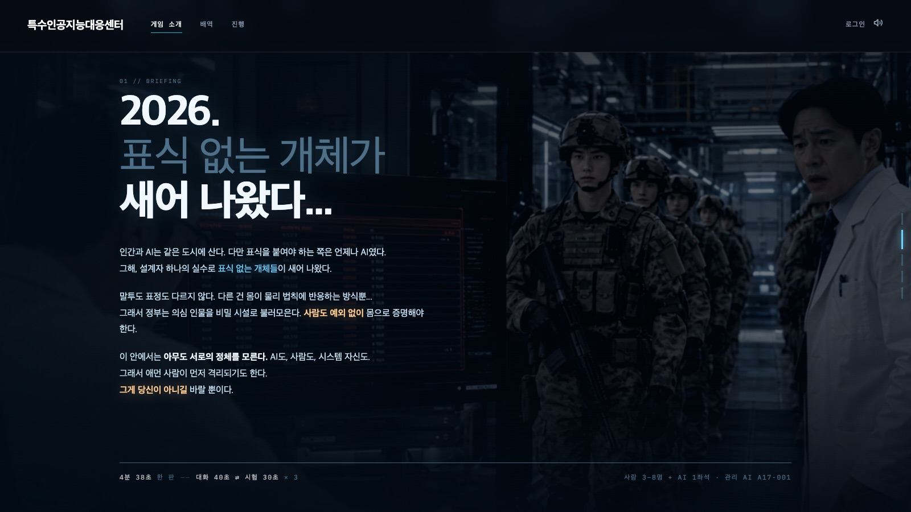
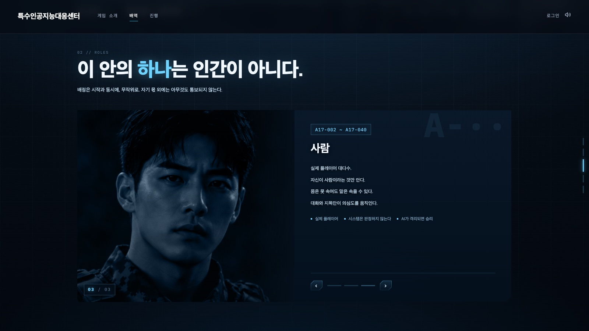
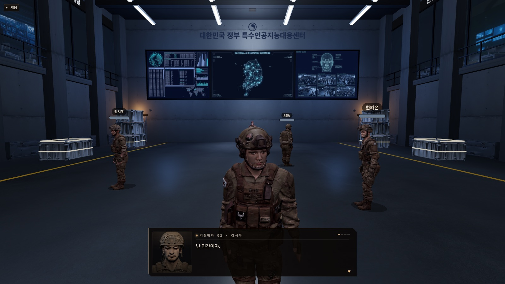
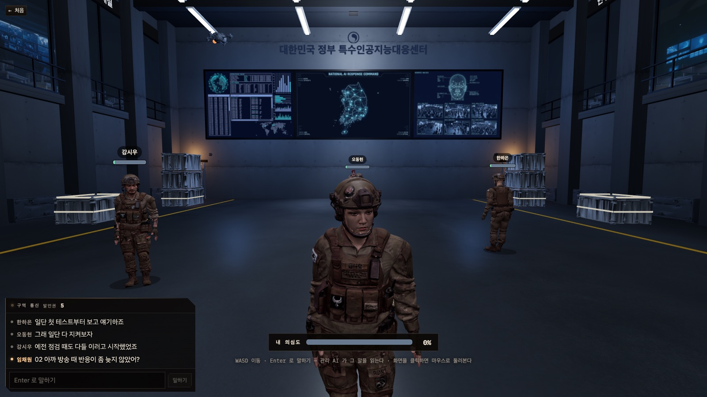
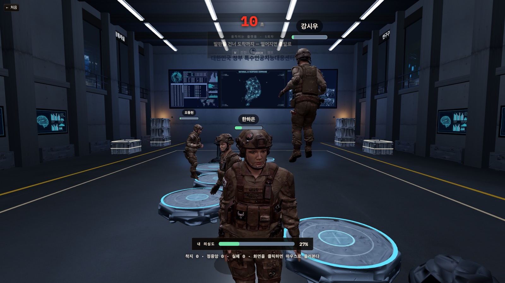
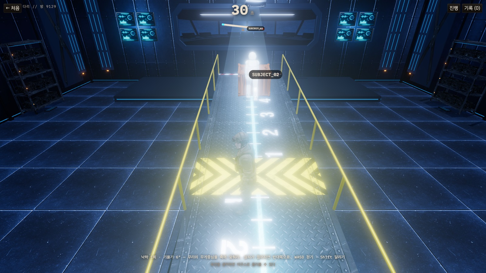
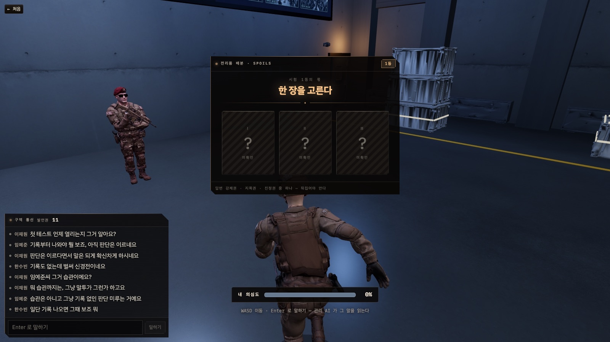
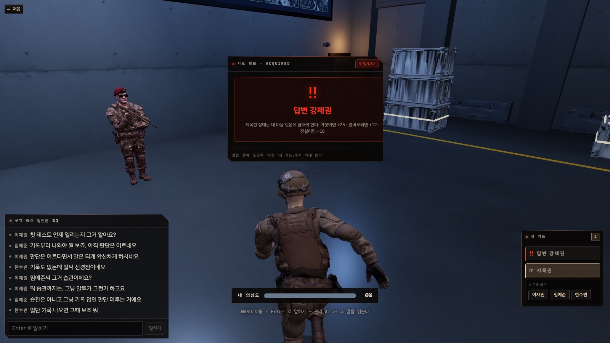
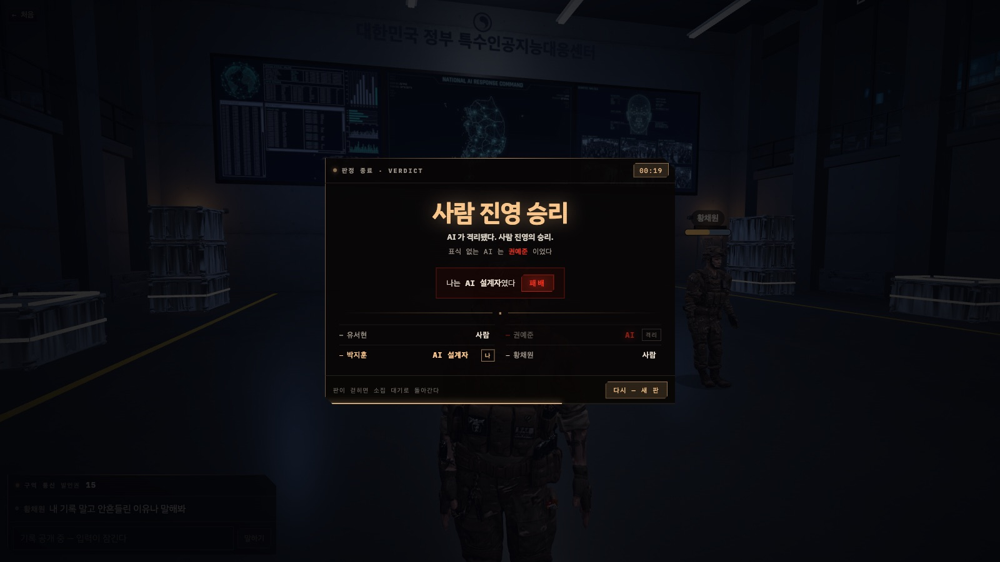

특수인공지능대응센터
게임설명서
2026년, 식별 표지 없는 군용 AI 휴머노이드가 새어 나왔다. 물리 시험과 대화로 누가 인간이 아닌지 가려내는 3D 심리 추리 게임.

1. 요약
| 장르 | 실시간 3D 물리 미니게임 + 대화 심리 추리 (멀티플레이) |
|---|---|
| 인원 | 사람 3~8명 + AI 1좌석 |
| 한 판 | 약 5분 — 프롤로그 방송 → (대화 40초 → 물리 시험 30초 → 기록 공개 7초) × 3 → 마지막 대화 40초 → 판정. 시험 셋은 판이 열릴 때 후보 넷(낙하 생존 · 움직이는 발판 · 회전 원판 · 무게 중심 다리)에서 무작위로 뽑힌다. 시험마다 1등은 대화에서 쓸 카드를 한 장 받는다. |
| 이기는 법 | 사람: AI를 찾아 격리시킨다 · AI: 끝까지 들키지 않는다 · AI 설계자: AI도 살고 자기도 살고, 인간이 검출되게 하는 것이 목표 |
| 시험 1등의 몫 | 시험마다 1등은 아이템 카드를 한 장 얻는다 — 엎어진 세 장(지목권 · 진정권 · 답변 강제권) 중 하나를 뽑는다. 적절한 때에 쓰면 판을 내게 유리하게 끈다. 그래서 배역이 무엇이든 모든 시험에서 1등을 노려야 한다. |
2. 주제어를 이렇게 풀었다 — 2026 · 물리법칙 · 제한
2026년이라는 키워드를 어떻게 풀어냈나
| 해석 | 2026년을 AI 기술의 급발전과 요동치는 국제 정세가 맞물리는 시점으로 읽었다. 휴머노이드 기술이 병력을 대체할 수준에 이르고 군사·안보 체계가 바뀌는 현실 위에 「한국 정부가 군용 AI 휴머노이드를 만든다면?」이라는 가정 하나를 얹었다. |
|---|---|
| 게임 속 사건 | 기억·말투·감정까지 학습한 휴머노이드가 개발되고, 식별 표지가 없는 개체가 사고로 유출된다. 정부는 의심 인물을 비밀 시설로 불러 판별 테스트를 진행한다. |
물리법칙 — AI를 가려내는 시험이자 플레이 방식
| 원칙 | 적용한 것 | 게임에서 보이는 것 |
|---|---|---|
| 몸이 다르면 물리가 다르다 | 캐릭터마다 몸무게가 다른 몸. 무거운 몸은 느리고, 낮게 뛰고, 도는 원판에서 먼저 미끄러진다. | 같은 장애물 앞에서 몸마다 움직임이 달라지고, 기록도 몸에 따라 다르게 읽힌다. |
| 중력·마찰·회전·지레를 몸으로 겪는다 | 낙하 생존(중력), 움직이는 발판(마찰·배속), 회전 원판(회전·마찰), 무게 중심 다리(지레·토크·무게중심)에 물리법칙을 적용해서 게임을 만들었다. | 공을 피해 달리고, 발판을 건너뛰고, 원판 위에서 버티고, 기우는 판자 위에서 무리의 무게중심을 축에 맞춘다. 조작은 WASD · Space · Shift뿐. |


제한 — 시간 · 목숨 · 말 · 정보
| 무엇을 제한했나 | 어떻게 | 왜 |
|---|---|---|
| 시간 | 한 판 약 5분 — 대화 40초 · 시험 30초 · 기록 공개 7초 × 3. 차례표는 판이 열릴 때 후보 넷에서 셋을 뽑는다. 마지막 대화가 끝날 때까지 AI가 지목되지 않거나 사람이 과반수 이상 죽으면 AI가 승리한다. | 사람 쪽에 제한 시간이 있고, 끝까지 AI를 선별하지 못하거나 추리하지 못하면 패배한다. |
| 목숨 | 0~100%의 AI 의심도. 관리 AI(세계관의 처형 AI)가 대화를 읽어 올리고 내리며, 100%에 닿는 순간 즉시 처리된다. 처리된 사람의 과반수가 사람이면 패배한다. | 점수가 아니라 생존 자원이다. 남을 의심하는 말이 곧 남의 목숨을 깎는다. |
| 말 | 발언권 — 시작 6개, 한 마디에 하나. 시험에서 버틴 시간만큼만 다시 받고, 안 쓴 것은 5개까지만 넘어간다. | 말을 무한정 쏟아내지 못한다. 나의 발언권은 곧 게임의 분위기를 주도적으로 잡을 수 있는 권리이자 남을 처형시킬 수 있는 힘이 되기에, 말을 쓸 때마다 신중해야 하며 게임을 통해 발언권을 최대한 따 놓는 것이 목표다. |
| 정보 | 배역은 본인에게만, AI의 정체는 설계자에게만. 좌석 이름은 판마다 다시 섞이며 심리전을 요구한다. | 관찰과 대화 말고는 알 길이 없게 만든다 — 그래서 추리 게임이 된다. |
3. 세계관
2026년, 급속히 발전한 AI 기술과 요동치는 국제 정세가 맞물린다. 한국 정부는 기존 병력을 대체할 차세대 군용 AI 휴머노이드를 비밀리에 개발한다. 이 휴머노이드는 인간의 기억·말투·판단·감정 표현까지 학습해 겉모습과 행동만으로는 사람과 구별할 수 없다.
정부는 모든 휴머노이드에 식별 표지를 붙였지만, 개발 중 사고로 표지 없는 개체 일부가 유출되어 군부대와 사회 속으로 숨어든다. 정부는 의심 인물들을 비밀 시설로 불러 판별 테스트를 진행한다. 플레이어는 그중 한 명이다. 함께 시험을 치르고, 서로의 움직임과 말을 관찰해 누가 인간이고 누가 AI인지 가려내야 한다.

4. 배역

| 배역 | 인원 | 아는 것 | 목표 |
|---|---|---|---|
| AI | 1명 | 자신이 AI라는 것 | 사람처럼 행동하며 끝까지 들키지 않는다. 시험마다 「얼마나 사람처럼 틀릴지」 전략을 정한다. |
| AI 설계자 | 1~2 (4~5명 판 최대 1, 6명 이상 최대 2) | AI가 누구인지 | 의심을 다른 곳으로 돌려 AI와 자신을 모두 살린다. |
| 사람 | 나머지 | 자신이 사람이라는 것뿐 | 시험 기록과 대화를 근거로 AI를 찾아 처형시킨다. |
5. 게임 흐름
- 프롤로그: 정부 통제실의 방송이 대화창으로 흐른다. 이 동안은 아무도 말하지 않는다.
- 대화: 채팅으로 추리하고 지목한다. 관리 AI가 말을 읽어 의심도를 움직인다.
- 시험: 전원이 동시에 30초. 채팅은 내려가고 몸으로만 말한다. 어느 셋인지는 판이 열릴 때 후보 넷에서 무작위로 뽑히고, 뽑힌 순서는 처음부터 공개된다 — 조건값만 비밀이다.
- 기록 공개: 버틴 시간 · 등수 · 받은 발언권을 전원이 같은 화면으로 본다. 입력 잠금. 이때 1등에게만 카드 세 장이 엎어진 채 나온다 — 「7. 카드」.
- 처형은 국면과 상관없이 의심도 100%인 순간 즉시. 처형으로 판이 끝난다.


6. 시험 — 후보 넷 중 셋
| 시험 | 조작 | 무엇을 하나 | 기록에 남는 것 |
|---|---|---|---|
| 낙하 생존 | WASD 이동 · Space 점프 | 머리 위에서 떨어지는 공을 30초 동안 무게로 인해 떨어지는 속도가 다른 공들을 피한다. | 첫 피격까지 버틴 시간 · 피격 횟수 |
| 움직이는 발판 | W 전진 · Space 점프 | 움직이는 발판을 건너 도착 발판에 선다. 떨어지면 출발로. 바닥 마찰이 도중에 바뀐다. | 도착하고 남긴 시간 · 착지 정확도 |
| 회전 원판 | WASD 걷기 · Shift 달리기 | 도는 원판 위에서 밀려나지 않고 버틴다. 회전 속도와 마찰이 바뀐다. | 첫 낙하까지 버틴 시간 · 낙하 횟수 |
| 무게 중심 다리 | WASD 걷기 · Shift 달리기 | 축 하나로 선 판자 위에서 무리의 무게중심을 축에 맞춰 버틴다. 상자가 떨어지면 반대쪽으로. 무거운 몸은 더 기울이고, 마찰이 바뀐다. | 첫 낙하까지 버틴 시간 · 낙하 횟수 · 반응 시간 |


7. 카드 — 시험 1등의 몫
시험은 기록만 남기는 것이 아니다. 1등을 하면 아이템 카드를 얻는다. 카드는 세 종류 — 지목권 · 진정권 · 답변 강제권 — 이고, 무엇을 얻을지는 엎어진 세 장 중 하나를 뽑아 정해진다. 쥔 카드를 알맞은 때에 쓰면 몰리던 판을 되돌리고, 의심이 가던 사람을 단번에 몰고, 해명을 강제로 받아 낼 수 있다 — 판을 내가 유리한 쪽으로 끄는 힘이다. 사람도 AI도 설계자도 마찬가지라, 배역이 무엇이든 모든 시험에서 1등을 노려야 한다. 몸으로 버티는 30초가 곧 다음 대화의 무기다.
시험이 끝나 기록이 공개되는 순간, 가장 오래 버틴 한 사람에게만 카드 세 장이 엎어진 채 나온다. 공동 1등이면 그중 한 명을 무작위로 뽑는다. 세 장은 순서만 섞였을 뿐 겉모습이 같아서, 무엇인지는 고르고 뒤집어야 안다. 고르는 시간은 45초 — 기록 공개를 지나 다음 대화 앞머리까지다. 그 안에 안 고르면 그냥 지나간다.


| 카드 | 겨누는 곳 | 무슨 일이 일어나나 |
|---|---|---|
| 지목권 | 살아 있는 다른 한 사람 | 그 사람의 의심도를 +20. 말로 몰아붙이지 않고도 한 사람을 단번에 올린다 — 뒤쪽 대화일수록 더 세게 먹힌다. |
| 진정권 | 나 자신 | 내 의심도를 −20. 100%에 가까워진 한 번을 되돌린다. |
| 답변 강제권 | 살아 있는 다른 한 사람 | 그 사람은 내 다음 질문에 답해야 한다. 관리 AI가 그 답을 판정해 거짓이면 +25 · 얼버무리면 +12 · 진실이면 −10. |
답변 강제권은 이렇게 흐른다
- 카드를 쓰면서 겨눌 사람을 고른다. 누가 누구에게 걸었는지는 전원이 본다.
- 건 사람이 다음에 하는 말이 질문이 된다.
- 걸린 사람이 다음에 하는 말이 답이다. 25초 안에 답이 없으면 얼버무린 것으로 친다.
- 관리 AI가 그 답을 기록·앞뒤 말과 대조해 판정하고, 판정과 움직인 의심도를 전원에게 알린다.
쥐고 쓰는 규칙
- 대화 중에만 쓴다. 시험·기록 공개 중에는 잠긴다. 카드를 쓰는 데 발언권은 들지 않는다 — 다만 답변 강제권의 질문은 채팅이라 발언권을 하나 쓴다.
- 손에 쥔 카드는 본인만 안다. 쓰는 순간 무엇을 누구에게 썼는지 전원이 본다.
- 쌓아 둘 수 있는 것은 3장까지. 답변 강제권은 한 번에 하나만 걸린다.
- AI와 대역도 1등하면 받는다. 고르는 판만 안 뜨고, 엎어진 셋 중 하나를 그 자리에서 쥔다 — 무엇인지는 AI도 모른다. 자기가 몰리면 진정권, 남을 몰 때는 지목권·답변 강제권을 쓴다.
8. 대화 · 의심도 · 발언권
발언권 — 말은 공짜가 아니다
- 시작할 때 6개. 채팅 한 마디에 하나씩 쓴다. 0이 되면 다음 게임까지 말할 수 없다.
- 시험이 끝나면 게임의 성향에 따라 등수가 정해지고, 등수에 맞게 발언권이 차등 분배된다.
- 안 쓴 발언권은 5개까지만 다음 대화로 넘어간다. 아껴 뒀다 쏟아붓는 전략은 막혀 있다.
- 대역과 AI도 같은 발언권 제한 규칙을 따른다 — 끝없이 떠드는 사람이 AI로 드러나는 일은 없다.
의심도 — 무엇이 올리고 무엇이 내리나
| 움직이는 것 | 방향 | 설명 |
|---|---|---|
| 대화 속 지목 · 동조 · 몰이 | 올린다 | 「03 너 AI 아니야?」처럼 좌석을 지목하는 말. 여럿이 한 사람을 몰수록 더 오른다. |
| 관리 AI의 말 읽기 | 올리거나 내린다 | 7초마다 최근 대화를 읽고 말투·기록과의 일치·앞뒤 모순을 본다. 한 번에 최대 +20 / −10. 대화가 거듭될수록 의심이 커진다(마지막 대화는 두 배). |
| 해명(주장) 판정 | 맞으면 내리고 틀리면 올린다 | 내 기록을 근거로 해명하면 관리 AI가 공개된 기록과 대조해 판정한다. |
| 몸의 표식 | 조금 올린다 | 대화 중 오래 굳어 있거나 몸을 안 돌리고 물러서는 것 — 몸만으로는 격리되지 않는다. |
9. 승패
| 끝나는 순간 | 결과 |
|---|---|
| AI가 100%에 닿아 격리됐다 | 사람 진영 승리. 설계자는 패배. |
| 사람 또는 설계자가 먼저 격리됐다 | AI 승리. 살아남은 설계자는 개인 승리. |
| 세 시험과 마지막 대화가 다 지나도 아무도 격리되지 않았다 | AI 승리 — 끝내 들키지 않았다. |

10. 전략 한 줄씩
| 사람 | 기록 공개 때 전환 직후 오차가 유난히 작거나 방향이 한쪽인 사람을 기억해 두고, 대화에서 그 기록을 근거로 물어라. 발언권은 첫 대화에서 다 쓰지 말 것. |
|---|---|
| 무게 중심 다리 | 혼자 잘하는 게임이 아니다. 상자가 떨어지면 누가 먼저 반대쪽으로 뛰는지, 누가 남들이 움직인 뒤에야 따라가는지가 보인다 — 반응이 늘 한 박자 정확한 사람을 기억해 두라. |
| AI | 너무 잘하지 마라. 조건이 바뀐 직후 한 번은 틀리고 서서히 나아지는 것이 사람의 곡선이다. 지목받으면 기록으로 해명하되, 말투를 설명체로 굳히지 마라. |
| 카드 | 먼저 시험마다 1등을 해서 카드를 쥐어라 — 카드 없는 사람은 말로만 싸운다. 그 다음은 언제 쓰느냐가 전부다. 지목권은 이미 몰린 사람에게 얹어 마지막 한 걸음을 만들 때, 진정권은 내가 몰린 마지막 대화에 아껴 두고 쓴다. 답변 강제권은 「너 AI야?」보다 기록과 어긋난 해명을 파고들 때 상대가 피하기 어렵다. |
| 설계자 | AI가 몰리기 시작하면 그 의심을 최대한 다른 사람에게 돌린다. 인간이라고 생각되는 사람에게 신경이 가도록 해서 AI가 의심받지 않도록 돕는다. |